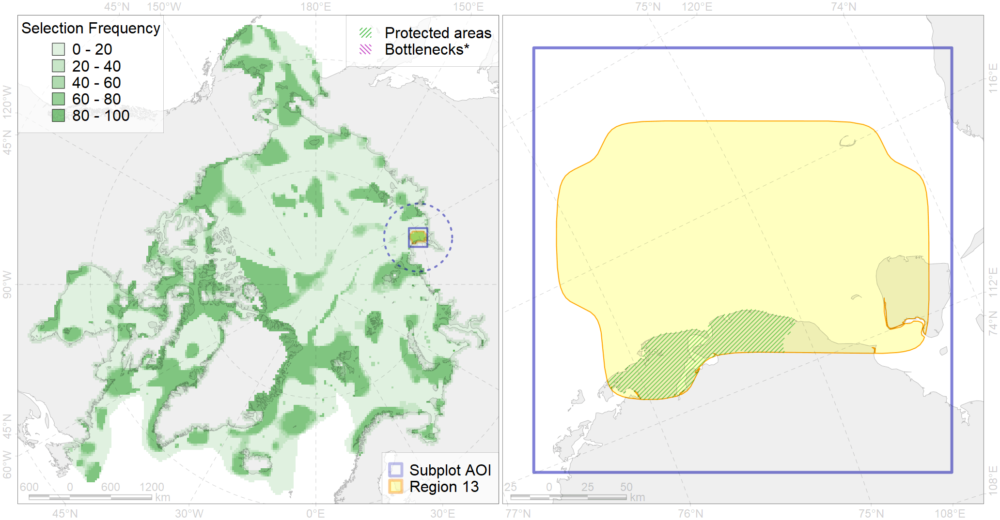

Region 13
Region 13
“ArcNet” scenario 33 achievement for region 13.
Use Accenter for advanced mode.

0
CFs inside of Region completely
1
CFs inside of Region at quarter
1
Complete-targets achievement by Region
4
Half-targets achievement by Region
| CF | Name | Target Achievement for Region | Proportion of Target Achievement in Region | Amount Proportion in Region |
|---|---|---|---|---|
| 7009 | East Taymyr area of increased benthic biomass | 93.0% | 92.0% | 69.5% |
| 6080 | Thick-billed murre (Uria lomvia eleonorae) breeding colonies | 41.2% | 28.3% | 22.2% |
| 1013 | Laptev Walrus haulouts | 22.2% | 21.2% | 20.0% |
| 3009 | Fast ice distribution in the Western part of the Laptev Sea | 166.7% | 44.1% | 10.9% |
| 1014 | Laptev Walrus Whelping patches | 37.0% | 15.8% | 9.5% |
| 2013 | Bearded seal whelping areas in the Laptev Sea | 37.6% | 17.7% | 9.5% |
| 6104 | 6104 Urilomvieleonorae breeding colonies | 24.1% | 13.7% | 9.3% |
| 3111 | polynya Laptev W | 37.6% | 11.6% | 7.8% |
| 7115 | II.1.1.9. Laptev middle shelf | 45.4% | 24.5% | 7.2% |
| 7114 | II.1.1.8. Laptev inner shelf | 97.4% | 21.9% | 6.8% |
| 9030 | polar bear denning areas of LV (Laptev Sea) subpopulation | 11.3% | 11.2% | 6.3% |
| 6006 | Brent goose (Branta bernicla bernicla) breeding&moulting grounds | 27.8% | 8.7% | 5.4% |
| 4095 | Estuarian (Taymyr-Lena) brackish –water fish complex; | 74.6% | 15.3% | 4.7% |
| 4015 | Feeding area of the Broad whitefish (Coregonus nasus), American populations (F 19) | 12.6% | 10.8% | 4.3% |
| 4010 | Feeding area of the Muksun (Coregonus muksun) (F 15) | 11.6% | 11.5% | 3.9% |
| 4021 | Feeding area of the Inconnu (Stenodus leucichthys nelma), Euro-Asian populations (F 22) | 11.0% | 9.2% | 3.7% |
| 4014 | Feeding area of the Siberian whitefish (Coregonus pidschian) (F 18) | 13.6% | 8.6% | 3.4% |
| 4036 | Distribution of the Borisov’s Arctic cod (Arctogadus borisovi) (F33) | 24.1% | 10.6% | 3.4% |
| 4008 | Feeding / nursery area of the Arctic Cisco (Coregonus autumnalis), Eurasian populations (F 14) | 7.0% | 6.6% | 2.8% |
| 7113 | II.1.1.7. Laptev shelf coastal domain | 17.1% | 9.3% | 2.6% |
| 3039 | Marginal Ice Zone distribution in July in the Laptev Sea LME | 10.2% | 8.7% | 2.6% |
| 9012 | polar bear of the LV (Laptev Sea) subpopulation distribution | 9.5% | 7.9% | 2.6% |
| 4018 | Feeding area of the Vendace, Least cisco (Coregonus sardinellа), Euro-Asian populations (F 20) | 10.1% | 5.3% | 2.6% |
| 7026 | Eurasian shelf region | 23.1% | 9.4% | 2.1% |
| 4077 | Fish zoogeography, Arctic Region, High-Arctic Shelf Province, Laptev – East-Siberian District (10D) | 15.2% | 8.0% | 1.9% |
| 6100 | 6100 Risstridactylpollicarius breeding colonies | 2.7% | 2.7% | 1.8% |
| 4061 | Feeding/nursery area of the Siberian sturgeon (Acipenser baerii) (F4) | 4.2% | 4.2% | 1.8% |
| 5007 | Beluga of the Barents-Kara-Laptev Sea stock general distribution | 7.0% | 4.7% | 1.8% |
| 7035 | Siberian shelf region | 18.8% | 5.4% | 1.7% |
| 4030 | Feeding area of the Arctic charr (Salvelinus alpinus), anadromous populations (F28) | 4.2% | 3.7% | 1.7% |
| 4052 | Range of the Fourhorn Sculpin (Myoxocephalus quadricornis) (F 45), American populations | 47.4% | 3.3% | 1.5% |
| 4058 | Range of the Arctic flounder (Liopsetta glacialis) (F48) | 23.9% | 3.1% | 1.5% |
| 6048 | Black-legged kittiwake (Rissa tridactyla tridactyla) breeding colonies | 1.9% | 1.4% | 1.2% |
| 6028 | Glaucous gull (Larus hyperboreus hyperboreus) breeding grounds | 4.5% | 0.7% | 0.8% |
| 4006 | Feeding/nursery area of the Pacific rainbow smelt (Osmerus dentex) (F12) | 3.5% | 1.3% | 0.7% |
| 4037 | Distribution of the Glacial cod (Arctogadus glacialis) (F34) | 5.4% | 1.3% | 0.5% |
| 3028 | Marginal Ice Zone distribution in April in the Laptev Sea LME | 3.4% | 0.6% | 0.4% |
| 6015 | Black guillemot (Cepphus grylle mandti) breeding grounds | 2.6% | 0.6% | 0.4% |
| 4023 | Feeding/migration area of the Pink Salmon (Oncorhynchus gorbuscha), native distribution (F23) | 4.9% | 0.7% | 0.3% |
| 3112 | polynya Laptev E | 1.2% | 0.4% | 0.3% |
| 4041 | Range of the Polar Cod (Boreogadus saida) (F35) | 1.6% | 0.6% | 0.2% |
| 3008 | Fast ice distribution in the Eastern part of the Laptev Sea and the East-Siberian Sea | 3.2% | 0.7% | 0.2% |
| 2061 | Ringed seal circumpolar foraging areas as predicted by MIZ distribution | 0.6% | 0.3% | 0.2% |
| 5090 | Narwhal in the Russian Arctic assumed summer range | 1.1% | 0.6% | 0.1% |
| 3057 | Multiyear Ice distribution in September in the Laptev Sea LME | 0.5% | 0.2% | 0.1% |
| 5112 | Arctic Cetaceans (beluga, bowhead, narwhal) winter habitats as predicterd by MIZ | 0.1% | 0.1% | 0.1% |